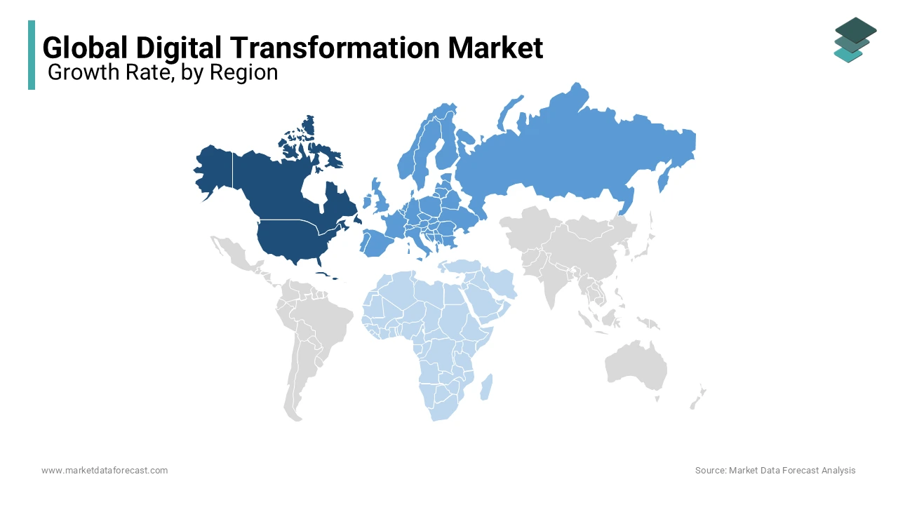

Современный этап развития общества характеризуется стремительной цифровой трансформацией всех сфер человеческой деятельности. Этот процесс затрагивает не только технологические аспекты, но и фундаментально меняет социальные, экономические и культурные парадигмы. Информационно-коммуникационные технологии (ИКТ) и Интернет-технологии становятся ключевыми драйверами экономического роста, социального развития и технологического прогресса, создавая основу для формирования принципиально новой цифровой экосистемы.

Глобальное распространение цифровой трансформации по регионам мира
Эволюция веб-технологий: историческая перспектива
Чтобы понять значимость перехода к Web 3.0, необходимо рассмотреть эволюцию интернета в исторической перспективе. Web 1.0 (1990-2004) характеризовался статическими страницами с минимальным взаимодействием, где пользователи были преимущественно потребителями контента. Web 2.0 (2004-настоящее время) принес социальные сети, пользовательский контент и мобильный интернет, но привел к централизации власти в руках технологических гигантов.
Web 3.0 представляет собой качественный скачок — децентрализованную, семантическую и интеллектуальную веб-среду, где пользователи получают контроль над своими данными и цифровыми активами. Этот переход обусловлен convergence нескольких ключевых технологий: блокчейна, искусственного интеллекта, Интернета вещей и edge computing.
"К 2027 году более 70% предприятий будут использовать технологии Web 3.0 для создания новых бизнес-моделей и цифровых экосистем" - Gartner, 2025
Цифровая экономика: переопределение хозяйственной деятельности
Цифровая экономика определяется как хозяйственная деятельность, в которой ключевым фактором производства являются цифровые данные, а их обработка и использование приводят к существенному повышению эффективности различных секторов. Согласно исследованию Всемирного банка, цифровая экономика растет в 2.5 раза быстрее, чем традиционная, и к 2027 году будет составлять более 24% мирового ВВП.
Роль ИТ в цифровой экономике является фундаментальной и многогранной: от инструментов автоматизации бизнес-процессов (RPA, интеллектуальная аналитика) до создания цифровых платформенных экосистем для взаимодействия различных участников рынка. Цифровая трансформация критически важных процессов в логистике, энергетике, финансовом секторе делает ИТ стратегическим активом национального масштаба.
Индустрия 4.0: четвертая промышленная революция
Концепция Индустрия 4.0 представляет собой четвертую промышленную революцию, основанную на интеграции киберфизических систем в производственные процессы. Основная цель — создание «умных фабрик» (Smart Factories), способных к самооптимизации и адаптивному управлению в реальном времени.
Ключевые технологии Индустрии 4.0
- Промышленный Интернет вещей (IIoT): Сенсоры и оборудование, объединенные в сеть для сбора и анализа данных в реальном времени
- Большие данные и предиктивная аналитика: Прогнозирование maintenance needs и оптимизация производственных процессов
- Искусственный интеллект: Управление целями поставок, контроль качества и автоматизированное принятие решений
- Цифровые двойники: Виртуальные копии физических объектов для моделирования и тестирования
- Кибербезопасность: Защита interconnected промышленных систем от кибератак
Реализация концепции Индустрии 4.0 требует тесной интеграции операционных технологий (ОТ) и информационных технологий (IT), что создает новые вызовы в области стандартизации, безопасности и управления. По оценкам McKinsey, внедрение технологий Индустрии 4.0 может повысить производительность на 15-20% и снизить затраты на обслуживание на 10-40%.